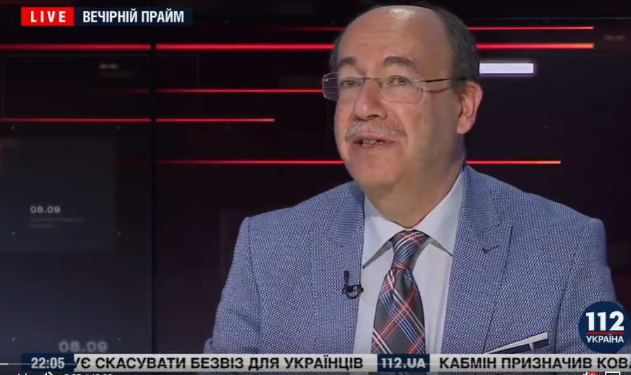

Виступ В.Кaцмана,08.09.2019
08.09.2019 Володимир Кaцман зробив огляд подій,що відбулися в Україні.
На його думку,продовження виконання обов'язків голови МОЗ Уляною Супрун
є неприпустим.Також він обговорив ситуацію з новим законом про незаконне
збагачення і про боротьбу з корупцією в цілому.На його думку,боротьба з
корупцією полягає в конкретних діях,а не в законодавчих її оформленнях:
"Корупція перемагається простими діями,коли покарання невідворотне та
публічне,і коли карають впливового та відомого чиновника".